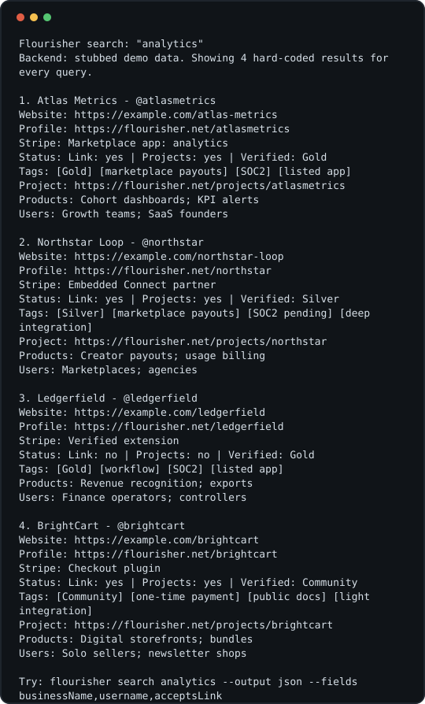
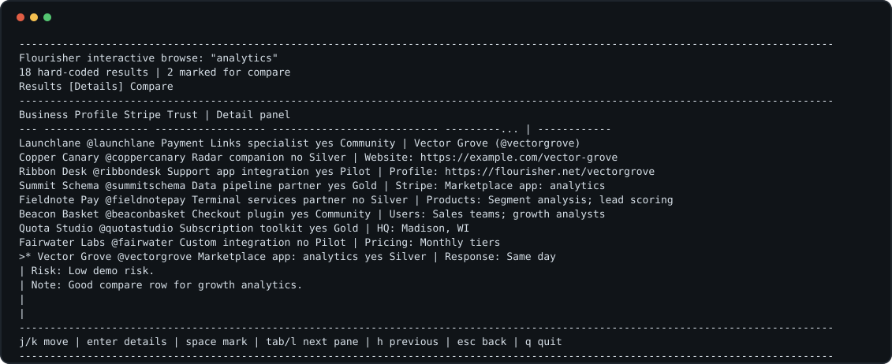
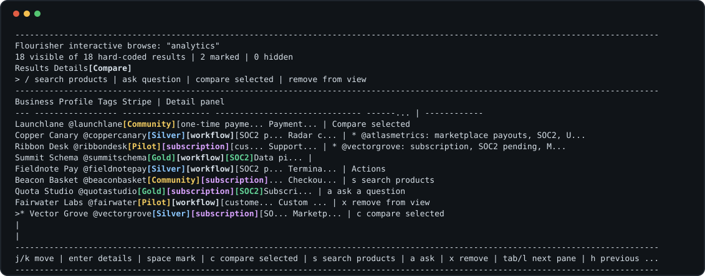
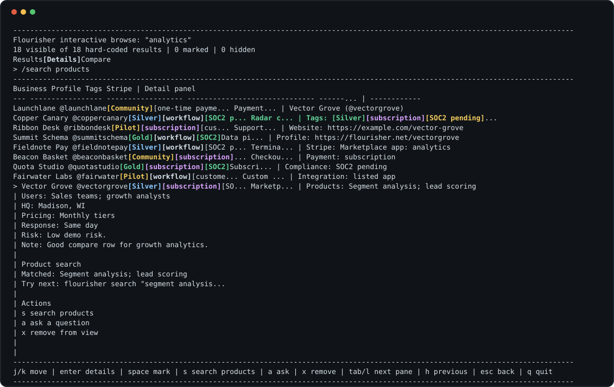

Human default
The default output is a table because the first workflow is scanning and comparing companies in a terminal.
Flourisher CLI
This repo starts with one hard-coded command, then documents how the same command can grow into a polished human workflow and a precise agent interface.

scripts/capture-cli-output.mjs.
flourisher search "analytics" returns the same 18
demo companies for every query. The table includes linked business
names, linked profiles, Stripe integration notes, link acceptance,
projects, verification level, products, and likely users.
There is no live backend, ranking model, or customer data. The hard-coded dataset lets reviewers focus on output shape, ergonomics, and agent contracts before arguing about data quality.
Reproducible demo
node ./bin/flourisher.js search "analytics"node ./bin/flourisher.js search "analytics" --no-links --columns 160node ./bin/flourisher.js search "analytics" --output json --fields businessName,username,acceptsLinknode ./bin/flourisher.js search "analytics" --json --page-size 2 --cursor demo:2node ./bin/flourisher.js search "analytics" --backend demo --json --limit 2node ./bin/flourisher.js search "analytics" --json --explain --fields businessName,usernamenode ./bin/flourisher.js describe allnode ./bin/flourisher.js profile atlasmetricsnode ./bin/flourisher.js compare atlasmetrics vectorgrove summitschemanode ./bin/flourisher.js browse "analytics" --snapshot --selected vectorgrove --marked atlasmetrics,vectorgrove --pane details --columns 132node ./bin/flourisher.js browse "analytics" --snapshot --selected vectorgrove --marked atlasmetrics,vectorgrove --pane compare --columns 132node ./bin/flourisher.js browse "analytics" --snapshot --selected vectorgrove --pane details --command "search products" --columns 132node ./bin/flourisher.js browse "analytics" --snapshot --hidden atlasmetrics --selected northstar --columns 96Interactive mode



Decisions
The default output is a table because the first workflow is scanning and comparing companies in a terminal.
JSON, CSV, field masks, limits, and describe search
avoid table scraping and reduce context usage. Cursor-shaped
pages and --explain keep agent reads compact.
The display contract is explicit so a future backend can replace hard-coded rows without rewriting the CLI.
--wide, --compact, and
--columns let demos and screenshots show how result
density changes by terminal width.
browse adds keyboard row navigation, details, and a
compare pane while preserving deterministic
--snapshot output for tests and screenshots.
Feature paths
Build a full TUI with row navigation, tabs, detail panes, compare mode, saved notes, copy/open shortcuts, and progressive loading. Ink is the shortest path from this Node implementation; Bubble Tea is the strongest option if the project moves to Go.
Keep adding structured outputs, schema introspection, field masks, input hardening, pagination, dry-run semantics for writes, and eventually an MCP surface. The CLI should be useful through both shell execution and typed tool calls.